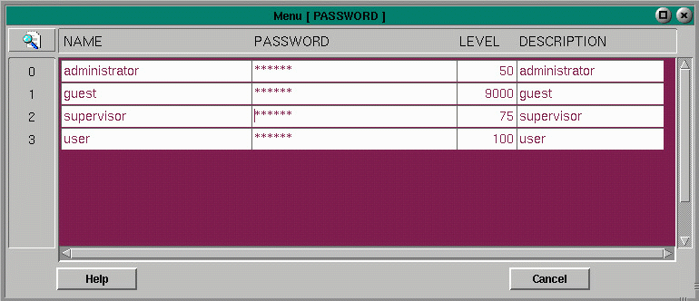

Set User Passwords

The Password Menu has the following fields:
Fields:
User Name - user name will be displayed in the lower left area of the Status Bar.TO ADD A NEW USERPassword - a string of up to fourteen alphanumeric characters which appears as a string of asterisks
Level - valid values for this field are 1-9999. A lower number allows the user to access more of the screens and menus. A level of 1 grants superuser privilege
Description - string description of user
Guest Login - There is a flag in the New Flags menu at record 30, called AUTOLOGIN. When this flag is set to 1. A user is created called guest with guest as the password. This guest user has a security level of 9001, granting minimal privilege. Many buttons will appear as shadows, indicating that they are locked to the user.
1. From the Utility Menu, select Administrator Utilities.
2. Select Set User Passwords.
3. Move the cursor to the NAME column. Press shift-alt-insert to insert a new record.
4. Edit the new entry by typing the desired information, pressing enter after each new entry.
TO DELETE A USER
1. Follow steps 1 and 2 above.
2. Move the cursor to the Name column of the entry to be removed. Press shift-alt-delete.
3. Press Esc. Re-select the Set User Password Menu to view your change.
Copyright © 2001 Fortna Inc. All rights reserved.